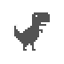

Press space to play
Try:
Checking the network cables, modem and router
Reconnecting to Wi-Fi
Running Windows Network Diagnostics
ERR_INTERNET_DISCONNECTED
Zesyde-150M-Multilingual-Router, CPU, INT8
Latency:
-- ms
•
Action:
WAITING
(
--%
)
•
Target:
Track Clear